TECHVESTVENTURES RISK ALERTS — Daily Mode — Emergent News Digest — November 8, 2026, 9:00 AM EST see all graphs click TVV Risk Center
TVV RESEARCH DIGEST — November 8, 2026 — 12 desks
1. Major Geopolitical Conflict Developments
- ★ Russia kept up its energy campaign overnight into Sunday with three Kh-59/69 guided missiles and 164 drones; Ukraine says it downed or neutralized 137 drones, with strikes recorded at 23 locations. One person was killed in Odesa. Zelensky says Russia is escalating to pressure Kyiv before the Abu Dhabi talks, and Moscow says it will keep striking fuel and energy targets it calls military-linked (claims from both sides not independently verified). RBC-Ukraine · RFE/RL · The Guardian
- ★ Abu Dhabi preview: the US–Russia–Ukraine talks are set for Tue–Wed Nov 10–11, the first three-way round since February. Russia has upgraded its team: Kremlin aide Vladimir Medinsky leads, with Deputy Foreign Ministers Sergei Ryabkov (first time in this format) and Mikhail Galuzin and GRU chief Igor Kostyukov. Rustem Umerov leads Ukraine's side, and Witkoff and Kushner are the US envoys. Budanov has played down hopes of a breakthrough: "these negotiations are not the last." Kyiv Post · Kyiv Independent · Reuters
- ★ Hormuz, weekend (conflicting claims): Iran's IRGC says three "non-compliant" tankers exploded and caught fire on Sunday while using an "illegal channel," after hitting mines, while Washington maintains the mines have been cleared. UKMTO separately reported a tanker on fire off Khasab, Oman, and another hit by an "unknown projectile" on Saturday; AFP could not confirm whether the reports describe the same ships. CENTCOM says a US aircraft disabled the St. Kitts-flagged cargo ship Huda in the Gulf of Oman for trying to breach the blockade of Iran. Gulf News / AFP · Xinhua · ABC News (Australia)
- ★ Iran escalation signals: the IRGC says it has lifted its self-imposed 2,000 km range limit on ballistic missiles, and CENTCOM has launched "Task Force Iron Gate" to curb Iranian arms and dual-use shipments over land borders and the Caspian. On diplomacy, Iran is reported (AP) to be reviewing Qatar's proposals on the nuclear dispute, and Trump discussed the mediation with Qatar's emir on Friday. This is a proposal under review, not an agreement. ABC News (Australia) · The Guardian
- ★ Backdrop: the Iacoviello AI-GPR geopolitical-risk index (seven-day means of acts and threats) runs only through Oct 31, so it cannot yet capture this weekend's Hormuz and Ukraine headlines or Tuesday's talks (see graph). It measures news coverage, not casualties. Iacoviello AI-GPR
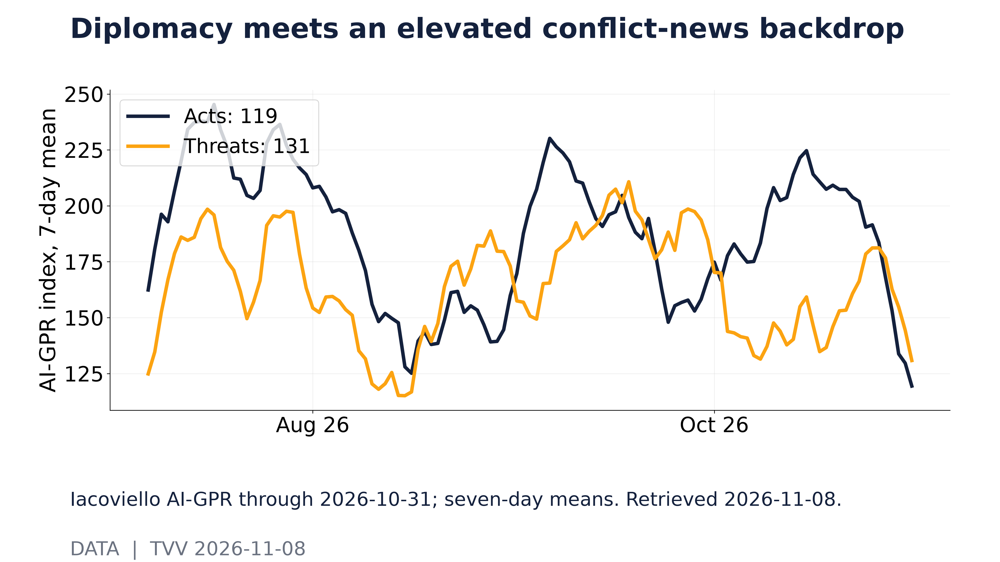
Diplomacy meets an elevated conflict-news backdrop. Iacoviello AI-GPR through 2026-10-31; seven-day means. Retrieved 2026-11-08. [Data; data as of 2026-10-31] Source: matteoiacoviello.com data page
2. Major Terror / Security Incidents
- ★ Poland: a gunman in military-style gear drove onto Kraków's Main Market Square on Saturday afternoon and fired at people, killing six (four women and two men, including a British man) and wounding at least 15, two of them police officers. Officials say he held far-right, ultranationalist views. Police later found three more bodies, believed to be his parents and sister, at his home in Ostrowiec Świętokrzyski. Prosecutors opened a terrorism investigation on Sunday and are preparing six murder charges, possibly nine; the suspect is in critical condition. National mourning began Sunday. BBC · ABC News · NBC News
- ★ Cyber exposure: CISA's Known Exploited Vulnerabilities catalog has added 285 flaws so far in 2026 (through Nov 8), and 40 of them carry identifiers at least three calendar years older than the date they were listed (see graph). Old, unpatched bugs are still being exploited. This counts exploited software flaws, not terrorist acts. CISA KEV
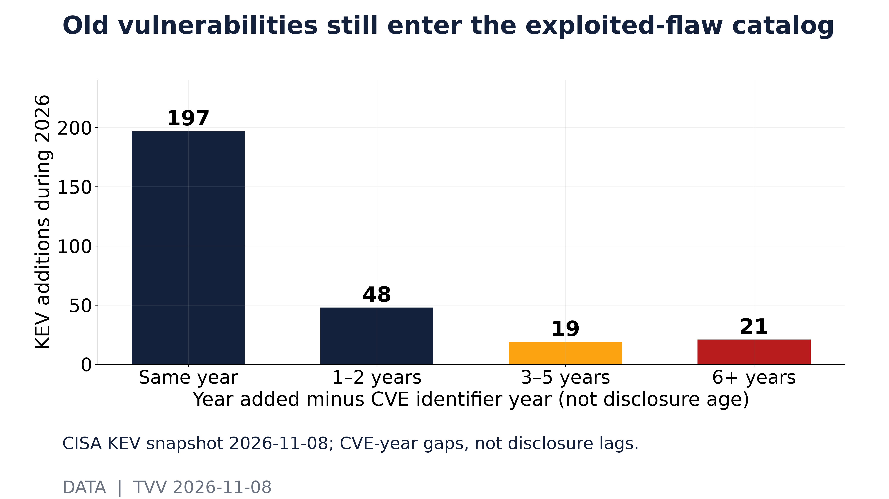
Old vulnerabilities still enter the exploited-flaw catalog. CISA KEV snapshot 2026-11-08; CVE-year gaps, not disclosure lags. [Data; data as of 2026-11-08] Source: cisa.gov data page
3. Earthquakes and Eruptions
- ★ No new M6.0+ earthquake since Nov 6, and none with significant casualties or damage. USGS's significant-earthquakes feed for the past week is empty. Context: USGS logged 210 M5+ quakes worldwide from Oct 9 to Nov 8; the median gap between them was about 1.5 hours and the longest about 26 hours, aftershocks included (see graph). Global timing says nothing about any one city's local hazard. USGS · USGS significant feed
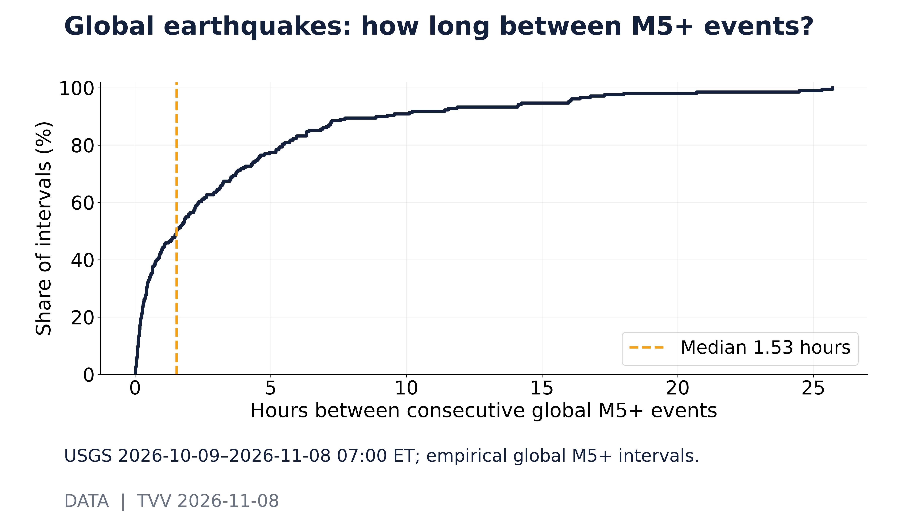
Global earthquakes: how long between M5+ events?. USGS 2026-10-09–2026-11-08 07:00 ET; empirical global M5+ intervals. [Data; data as of 2026-11-08 07:00 ET] Source: earthquake.usgs.gov data page
TECHVESTVENTURES ACTION-ALERT — November 8, 2026 see all graphs click TVV Risk Center
EDITOR — Michael Hentschel
Most news events require or spawn no action or reaction, some (but not many) are or become warnings. We draw attention to substantial lifestyle risks and market risks in particular, some created by Mid-Term Vote anxieties, Middle East tensions, vast over-indebtedness globally, and other events we track. Longer term but capable of causing sudden power surges as serious as the Carrington Event. Climate instability occasioned by long-term cyclical solar electro-magnetic flares, is becoming much more prominent and even more likely. New AI predictive analytics and pattern seekers are pointed in some of these directions, and we monitor imminent likelihood. Some readers might hedge and others might see opportunity. The above is not investment advice.
4. Solar / Space Weather
- ★ Magnetic north keeps moving toward Siberia. NOAA's World Magnetic Model (WMM2025) places the modeled north dip pole at 85.762°N, 139.298°E in 2025 and projects 84.723°N, 126.092°E by 2030 (see graph). Projection: the published model expects the drift toward Siberia to continue through 2030. That tells us the pole's path, not when a reversal or excursion would happen. NOAA's historical 1900–2025 path uses a different field model, so the 2025 gap between the two lines is not motion. NOAA NCEI · NOAA WMM2025
- ★ Long-horizon watch (Chicken Little Principle): magnetic-pole drift is a warning grounded in measured data, but no one can predict the timing of a sudden geomagnetic shift. Michael Hentschel's own view: 2035 at the earliest, with critical earth changes along the way. Next weekly globe: Nov 15. NOAA NCEI
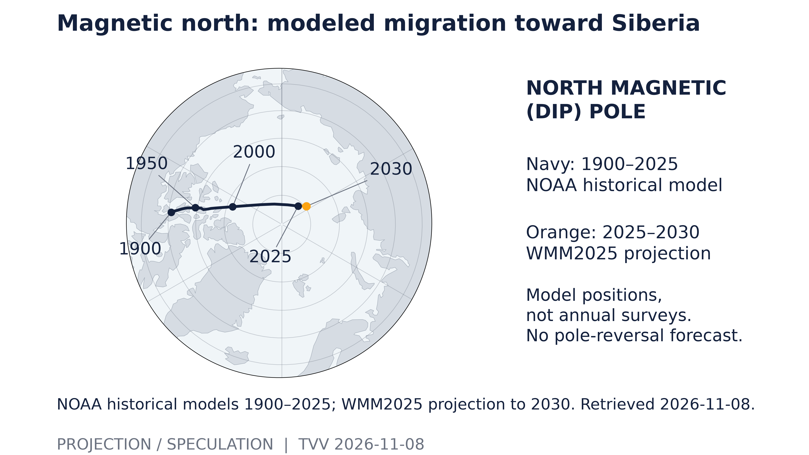
Magnetic north: modeled migration toward Siberia. NOAA historical models 1900–2025; WMM2025 projection to 2030. Retrieved 2026-11-08. [Projection/Speculation; data as of Historical 1900–2025; WMM2025 2025–2030] Source: ncei.noaa.gov data page
5. Critical Infrastructure / Transportation Disruptions
- ★ Ukraine's grid took new overnight hits: DTEK says more than 600,000 people in Dnipropetrovsk region, including the city of Dnipro, lost power, and about 250,000 more lost it in Kharkiv region. Hospitals in Dnipro switched to diesel generators and electric public transport stopped; DTEK says repeated attacks are slowing repairs. Zelensky says 140 apartment buildings in Zhytomyr region lost heating after a strike. Al Jazeera · RFE/RL
- ★ The AI build-out's lease bill keeps climbing: Oracle's recognized operating lease liabilities reached $34.6B at Aug 31, 2026, up from $16.3B a year earlier; CoreWeave's were $16.3B at November 8, 2026, up from $3.4B (SEC filings; see graph). These are discounted balances for leases that have already started. Signed leases that have not yet commenced are excluded, so total commitments are larger. SEC EDGAR (Oracle) · SEC EDGAR (CoreWeave)
- ★ Physical assets are scaling just as fast: Oracle's net property, plant and equipment rose to $127.8B at Aug 31, 2026 from $53.2B a year earlier, and CoreWeave's to $46.7B at June 30 from $16.6B (see graph). These are company-wide totals after depreciation, not data-center-only spending or megawatts. CoreWeave reports Q3 results Tuesday after the close. SEC EDGAR (Oracle) · SEC EDGAR (CoreWeave) · Wall Street Observer
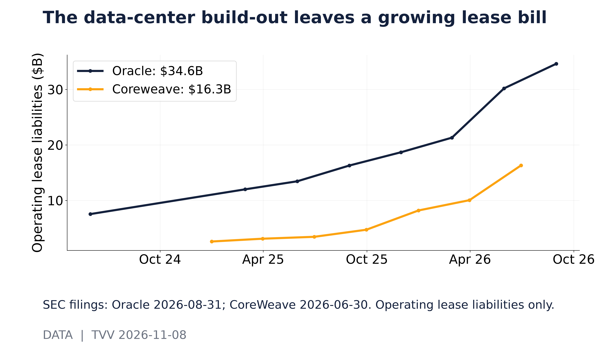
The data-center build-out leaves a growing lease bill. SEC filings: Oracle 2026-08-31; CoreWeave 2026-06-30. Operating lease liabilities only. [Data; data as of Oracle 2026-08-31; CoreWeave 2026-06-30] Source: data.sec.gov data page
as of Oracle 2026-08-31; CoreWeave 2026-06-30] Source: data.sec.gov data page
6. Econo-Metrics
- ★ Labor slack beneath the headline: October's broad U-6 underemployment rate was 7.9%, against 4.1% for headline U-3 unemployment, a 3.8-point gap (see graph). U-6 adds involuntary part-timers and marginally attached workers. The two measures use different denominators, so the gap is an indicator, not a headcount, and it should not be read as AI displacement. Context: October's strong payroll report and 0.4% monthly pay gain kept rate-hike talk alive. BLS Table A-15 · FRED U6RATE
- ★ CPI on Tuesday, Nov 10, 8:30 AM ET: Morningstar's consensus is +0.24% m/m headline (after +0.60% in September) and +0.2% core, with year-over-year headline at 3.94% (from 3.70%) and core at 2.68%. FactSet's average also points to 3.9% y/y (CNBC). October PPI follows Friday. Sensitivity arithmetic: a 0.2% October rise would put three-month annualized headline inflation at about 5.1%, and 0.3% at about 5.5% (see graph). Tuesday's print will land on that path; it is arithmetic, not a forecast. BLS schedule · Morningstar · CNBC · FRED CPIAUCSL
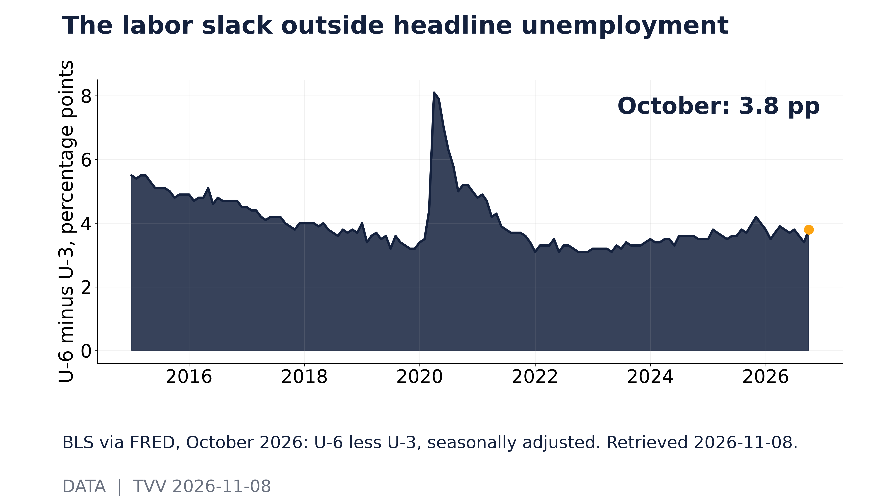
The labor slack outside headline unemployment. BLS via FRED, October 2026: U-6 less U-3, seasonally adjusted. Retrieved 2026-11-08. [Data; data as of 2026-10] Source: fred.stlouisfed.org data page
7. Epidemic / Bio-Metrics
- ★ US outpatient respiratory illness is climbing early: CDC ILINet's weighted influenza-like-illness rate rose to 2.84% in MMWR week 43 (released Nov 6), up from 2.45% and 2.20% the two weeks before (see graph). ILI is a symptom-based measure, not lab-confirmed flu alone, and recent weeks can be revised. CDC FluView · CDC ILINet via Delphi
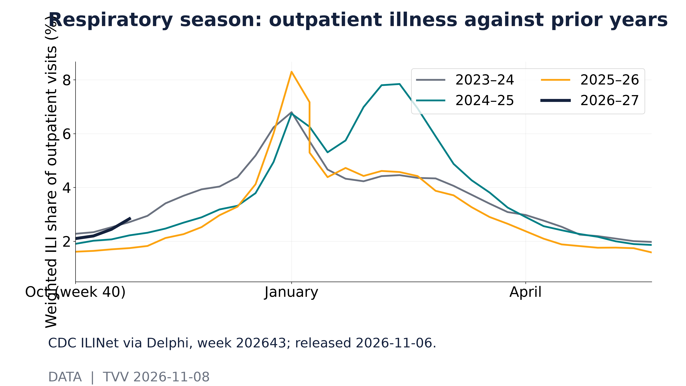
Respiratory season: outpatient illness against prior years. CDC ILINet via Delphi, week 202643; released 2026-11-06. [Data; data as of MMWR 202643; release 2026-11-06] Source: api.delphi.cmu.edu data page
8. Gold and Silver and Commodities
- ★ Weekly commodities recap with a volatility lens: gold and silver gained on the week while oil fell, but the ride has not been calm. On Friday's close, 20-session annualized realized volatility was about 25% for the gold ETF GLD and 46% for the silver ETF SLV, against about 20% for the S&P 500 ETF SPY (see graph). Silver is still swinging more than twice as hard as stocks. These are backward-looking ETF measures, not spot quotes or loss odds. Yahoo Finance (GLD) · Yahoo Finance (SLV)
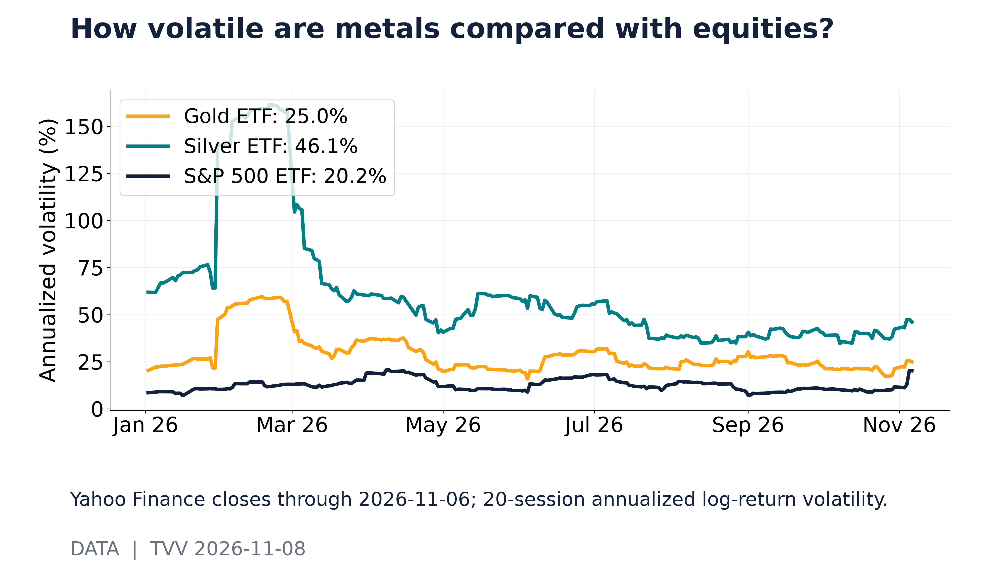
How volatile are metals compared with equities?. Yahoo Finance closes through 2026-11-06; 20-session annualized log-return volatility. [Data; data as of 2026-11-06 close] Source: query1.finance.yahoo.com data page
9. Stock Averages and Nasdaq Major Movers
- ★ The week's churn ran far ahead of its net loss: SPY ended Oct 30–Nov 6 down 2.7%, but its daily moves added up to about 7.2% of travel; QQQ fell 5.0% on about 10.8% of travel, and IWM 2.0% on about 7.4% (see graph). That was a Dow surge of 1,500 points on Wednesday, all of it erased by Thursday's 1,800-point plunge, and then a partial Friday rebound. The Nasdaq-100 lost 4.9% to 26,989.99, and the VIX ended at 25.64, up from 19.42. Yahoo Finance · CNBC · Wall Street Observer
- ★ Laggards were AI infrastructure names reporting this week: Nebius −16.0%, CoreWeave −15.4% (after a 52-week low of $40.58 on Nov 5), Applied Materials −14.7% (55% below its June high) and Cisco −10.2%. Rocket Lab was a relative holdout, down 3.0% after a 15.4% Friday jump, and money rotated into defensive healthcare and consumer staples. Bitcoin was $75,774 at 5:20 AM ET Sunday, down 3.15% on the week and heading for a fifth straight lower weekly close. Wall Street Observer · CNBC · BlockchainReporter
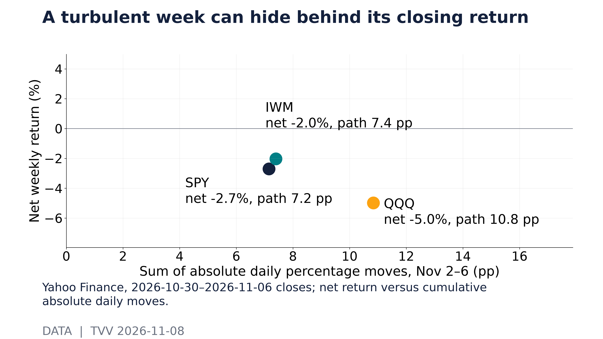
A turbulent week can hide behind its closing return. Yahoo Finance, 2026-10-30–2026-11-06 closes; net return versus cumulative absolute daily moves. [Data; data as of 2026-11-06 close] Source: query1.finance.yahoo.com data page
10. Polymarket and Kalshi Sentiment Highlights
- ★ December Fed decision on Polymarket (Sunday 7:01 AM ET): 76.5% for a 25 bp hike, 21.5% for no change, 0.65% for a 25 bp cut, and 0.55% each for 50 bp+ moves either way. These are separate YES prices and need not sum to 100% (see graph). Odds: traders see a December hike as the base case, so Tuesday's CPI is the next big test, and a soft print would most likely shift odds toward a hold. Alaska's ranked-choice tabulation on Nov 18 is the next dated election catalyst. Polymarket · BLS schedule · Alaska Division of Elections
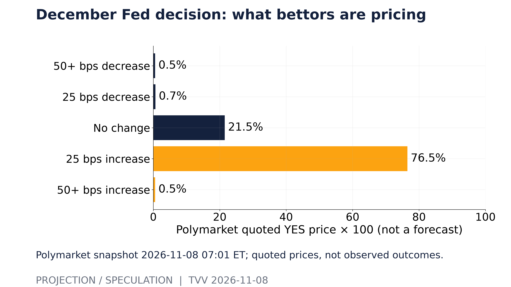
December Fed decision: what bettors are pricing. Polymarket snapshot 2026-11-08 07:01 ET; quoted prices, not observed outcomes. [Projection/Speculation; data as of 2026-11-08 07:01 ET] Source: polymarket.com data page
11. Tech-Metrics
- ★ Big Tech is moving more as a block: the average 60-session correlation of daily returns across Apple, Microsoft, Nvidia, Amazon, Alphabet, Meta and Tesla (21 pairs) rose to about 0.25 by Friday, from about 0.12 on Oct 16. That is still well below the year's high of about 0.46 in late April (see graph). Higher readings mean owning several megacaps diversifies less. It is not a crash forecast. Thursday's rout erased about $1 trillion from the Magnificent Seven, $440B of it from Nvidia. Yahoo Finance · CNBC
- ★ AI security research milestone: Google DeepMind shared two cryptanalysis papers in which AI agents found weaknesses in legacy 1024-bit RSA. Two cooperating agents reran a known 1024-bit computation in under four days at 391 CPU core-years, 3.5 times cheaper than the original. Both papers say 2048-bit and larger RSA keys are not threatened, so the takeaway is to retire any remaining 1024-bit keys. AI Tools Optimizer roundup
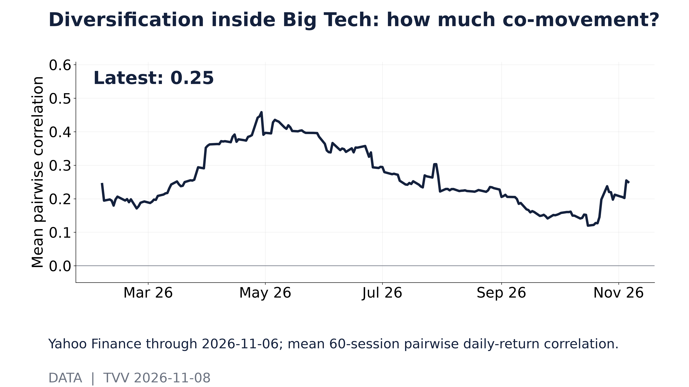
Diversification inside Big Tech: how much co-movement?. Yahoo Finance through 2026-11-06; mean 60-session pairwise daily-return correlation. [Data; data as of 2026-11-06 close] Source: query1.finance.yahoo.com data page
12. AI Hypergrowth Risks
- ★ Leverage behind the build-out: Oracle's reported debt was about 3.4 times its cash at Aug 31 ($125.3B debt vs $36.4B cash), and CoreWeave's about 6.4 times at June 30 ($35.6B vs $5.5B) (see graph). These ratios exclude operating leases, uncommenced leases, guarantees and off-balance-sheet vehicles, so true obligations are larger. SEC EDGAR (Oracle) · SEC EDGAR (CoreWeave)
- ★ Rate-shock sensitivity (projection): if 10%, 25% or 50% of that debt were refinanced 1 percentage point higher, Oracle's annual interest bill would rise by about $125M, $313M or $627M, and CoreWeave's by about $36M, $89M or $178M (see graph). This is sensitivity to a 100 bp shock, not a forecast that those maturities come due next year; hedges and the mix of fixed and floating debt can change it. SEC EDGAR (Oracle) · SEC EDGAR (CoreWeave)
- ★ AI money gets pickier: OpenAI has closed about $11B of a new round at a $1.25T valuation (Bloomberg, Reuters), short of its early aim of $30B or more at $1.4T; the round could reach $20B, with SoftBank and MGX taking part. Some Anthropic investors now call a $1.5T IPO valuation "a stretch," against earlier talk of up to $2T (CNBC). Concentration risk: a few labs' fundraising now sways the whole AI-infrastructure trade. Forbes Middle East / Reuters · AI Tools Optimizer roundup
- ★ AI success, with fragility alongside: Physical Superintelligence says its system, built on an unreleased Anthropic model, proved the 2008 Aaronson–Ambainis quantum-speedup conjecture in three days, with a Lean-checked proof that still needs human review. Meanwhile OpenAI is monitoring a fix for declined payments on some US business Mastercards, which can block API auto-recharges and cut off calls once balances run out. That is a reminder of how many workflows hinge on one provider's billing pipe. AI Tools Optimizer roundup · MUVO AI incidents
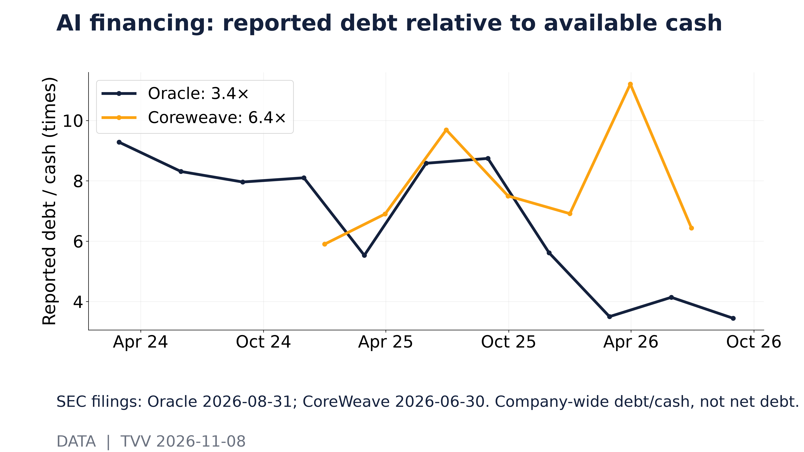
AI financing: reported debt relative to available cash. SEC filings: Oracle 2026-08-31; CoreWeave 2026-06-30. Company-wide debt/cash, not net debt. [Data; data as of Oracle 2026-08-31; CoreWeave 2026-06-30] Source: data.sec.gov data page